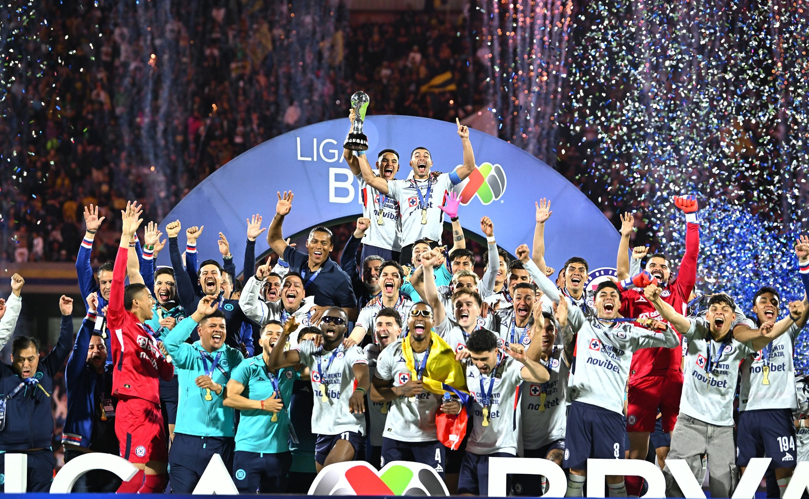
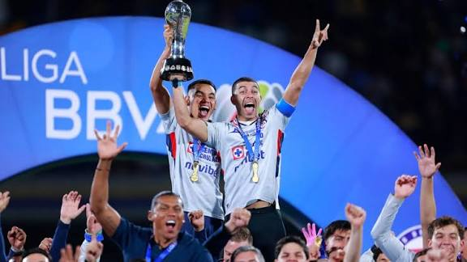

Bienvenidos a este espacio, donde conocerán más sobre mí:
El torneo Clausura 2026 quedará grabado para siempre en la memoria de la afición cementera. Tras noventa minutos de pura tensión, el silbatazo final desató la locura en el Estadio Ciudad de los Deportes: Cruz Azul se coronó campeón de la Liga MX este año.La noche se tiñó de celeste mientras las lágrimas de emoción rodaban por las mejillas de miles de fanáticos que esperaron este momento. No fue un camino fácil, pero el equipo demostró el verdadero significado de la resistencia, el trabajo en equipo y la pasión. Desde la épica campaña regular hasta esa última jugada en la gran final, cada jugador dejó el alma en la cancha para devolver a la institución al lugar que le corresponde: lo más alto del fútbol mexicano.Hoy las calles celebran, las banderas ondean con orgullo y el grito de ¡Azul, Azul! retumba en todo el país. Esta estrella no es solo un trofeo más; es el premio a una afición incondicional que jamás dejó de creer.
El éxito de este torneo no fue obra de la casualidad, sino el resultado de un proceso de pura resiliencia. Cruz Azul supo sobreponerse a las críticas, a las bajas por lesión y a momentos de enorme presión en la fase regular. El cuerpo técnico consolidó un estilo de juego vistoso y ofensivo, mientras que el plantel cerró filas para transformarse en una auténtica familia. Cada partido de la liguilla se vivió como una final anticipada, demostrando que este equipo estaba diseñado para romper cualquier maldición y escribir su propio destino.
La gran final fue un auténtico drama que paralizó los corazones de millones de aficionados. El partido definitivo se jugó con el cuchillo entre los dientes, con un rival que no cedió ni un solo centímetro de terreno. Sin embargo, la estrategia perfecta y la genialidad de nuestras figuras aparecieron en el momento más crítico. Ese gol agónico que rompió el empate no solo significó el título, sino el estallido de júbilo de una nación celeste que contuvo el aliento hasta el último segundo. Fue la consagración de una noche perfecta donde el destino se vistió de azul..
Revive las mejores imágenes del festejo:


Visita el sitio oficial para ver más detalles: Página Oficial de Cruz Azul